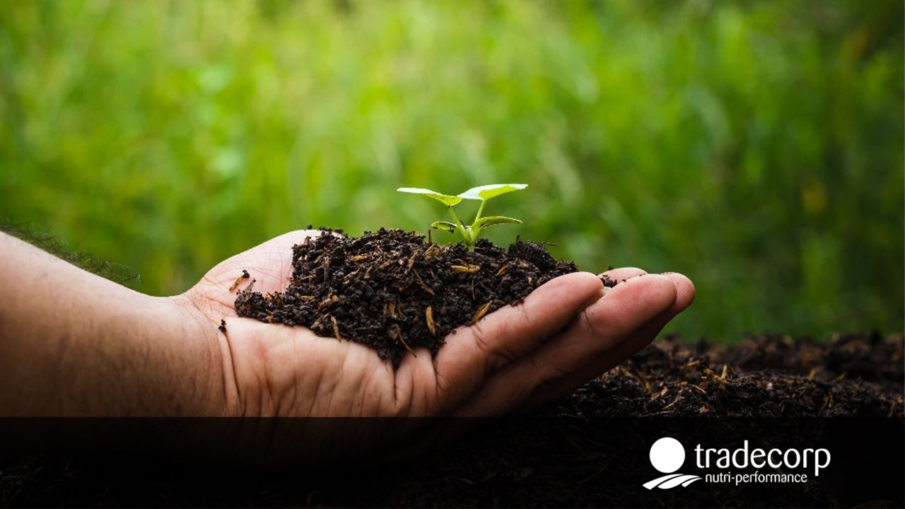

Somos una página didáctica que busca reducir el consumo y los desechos orgánicos, con nosotros podrás aprovechar tus desechos orgánicos convirtiéndolos en compostaje para tus plantas. Además de esto implementamos la filosofia STEAM dentro de nuestro proyecto, si quieres saber que es esto da click al botón.
FILOSOFIA STEAMA continuación te mostraremos paso a paso la creación del compostaje común. Contamos con recursos multimedia como videos que te ayudarán con la construcción de tu propio compostaje casero, además de esto, podrás acceder a una experencia de realidad aumentada en la que verás en 3D un modelo de cómo debería quedar tu compost terminado.
Por medio de este Link tendrás acceso a una experiencia de Realidad Aumentada para ver el producto final del compost, copialo y pegalo en el buscador de tu dispositivo móvil para vivir la realidad aumentada. https://giulliana21.github.io/Realidad-Aumentada-AC/

A continuación te mostraremos paso a paso la creación del compostaje común. Contamos con recursos multimedia como videos que te ayudarán con la construcción de tu propio compostaje casero, además de esto, podrás acceder a una experencia de realidad aumentada en la que verás en 3D un modelo de cómo debería quedar tu compost terminado.
Por medio de este Link tendrás acceso a una experiencia de Realidad Aumentada para ver el producto final del compost, copialo y pegalo en el buscador de tu dispositivo móvil para vivir la realidad aumentada. https://giulliana21.github.io/Realidad-Aumentada-AC/

A continuación te mostraremos paso a paso la creación del compostaje común. Contamos con recursos multimedia como videos que te ayudarán con la construcción de tu propio compostaje casero, además de esto, podrás acceder a una experencia de realidad aumentada en la que verás en 3D un modelo de cómo debería quedar tu compost terminado.
Por medio de este Link tendrás acceso a una experiencia de Realidad Aumentada para ver el producto final del compost, copialo y pegalo en el buscador de tu dispositivo móvil para vivir la realidad aumentada. https://giulliana21.github.io/Realidad-Aumentada-AC/
Como sabes, este tipo de procesos tienen un cuidado especial que si no se mantienen pueden hacer que todo tu compost sea menos eficiente, por lo cual aquí te presentamos algunas maneras útiles de cuidar tu compostaje
Test de Humedad Cuidado del Compostaje Capas de Materias